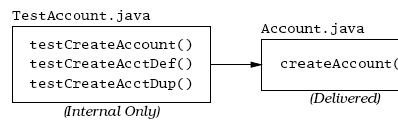
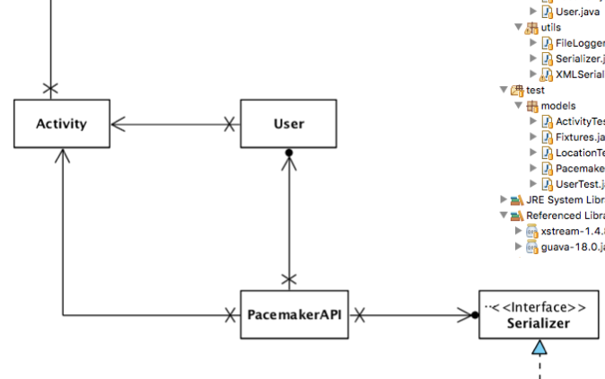

Classes & Objects

This topic provides a quick review of Java Objects, Classes and Interfaces. You will also cover packages, constructors, polymorphism, information hiding and abstract classes.
Data Abstraction and Application Programming Interfaces (APIs)

This lecture introduces the concept of abstract data types and Application Programming Interfaces(APIs). You will see some common examples in the Java programming language and also learn how to write clients for Java APIs.
Algorithms Intro and Union Find

Digital Images and Java

This talk provides a quick overview of digital images and how they can be processed in Java. Image resolution, quantisation, colour and binarisation are explored for raster images. Understanding these concepts is vital to completing your first assignment.
TDD Introduction

Test Driven Development has been among the most influential approaches in recent software engineering history. Here we look at its origins, principles and some of the important benefits of the approach.
First Tests

The essential elements of TDD are fairly easy to grasp. The support libraries (xUnit) are relatively straightforward, and we can expect our IDE to provide direct assistance to using these libraries. Here we look at the facilities Eclipse provides to the JUnit library.
Annotations

Earlier JUnit libraries relied on Inheritance and specific design patterns to integrate the unit tests into runnable test suites. Modern JUnit relies on Java Annotations - which simplify test structure and enable more flexible structuring of tests classes.
Analysis of Algorithms

This talk introduces the scientific method and how it can be applied to predict the running time of an algorithm. You will also learn how to produce mathematical models for algorithms and estimate an algorithms order of growth using tilda notation.
Sorting

This talk introduces the comparable interface and how this is used in sorting algorithms. Three well known sorting algorithms are descibed and you will be shown how sorting can be used to shuffle a deck of cards.
Recursion
This talk serves as a preliminary discussion for covering more advanced sorting algorithms.
Divide and Conquer

Divide and conquer works by recursively breaking down a problem into two or more smaller sub-problems(divide) , until these become simple enough to be solved directly (conquer).
Collections
All programming languages will have support for a range of common data structures. Unlike typical dynamic programming language, collections are implemented as a standard library in Java (as opposed to being built in). We will survey the major features of this library, focusing on the principle interfaces and implementations. There is considerable more to collections, which should be investigated independently.
Pragmatic Testing

One way of becoming familiar with TDD is to explore some simple examples of various strategies that might be employed in some simple examples. Here we look at useful examples from the Pragmatic series - which laid out much of the early exploration of TDD.
Pacemaker with First Tests

We revise the initial pacemaker lab to use collections and a simple API
Pacemaker with Fixtures + Tests

We try to apply some of these practices to the Pacemaker app we are building the labs. In general many of the tests are straightforward but we strive to make elegant use of fixtures.
Writing Tests

A review of the basic structure of JUnit based tests, elaborating on the primary assert calls and annotations.
Right BICEP

Guidelines for Composing Tests phrased using the acronym: - Right, Boundary, Inverse, Cross-check, Errors & Performance.
C.O.R.R.E.C.T

More guidelines - this time the acronym is Conformance, Ordering, Range, Reference, Existing, Cardinality, Time.
Assignment Tests

Guidelines on some of the tests you may write as part of your assignment
Streams

At the heart of the JDK are object I/O and Serialization capabilities, packaged into a comprehensive library for managing the life cycle of simple objects. Although the approach taken by this particular base library has to some extent been superseded by other approaches, it remains an important and influential technical approach, that can be usefully applied in simpler standalone applications.
Pacemaker TDD 05

Pacemaker TDD 05
Pacemaker TDD 05

Pacemaker TDD 05
Exceptions

Dealing with unexpected events and errors is usually delegated to the Exceptions mechanism in Java. Here we review the nature of exceptions and identify some best practices when dealing with exceptions generated from libraries and frameworks.
Movie Assignment

A walk though how you might approach your second assignment
Movie Serialization

A look at a bug in our existing serialization library + an review of how CSV ingestion can be approached.